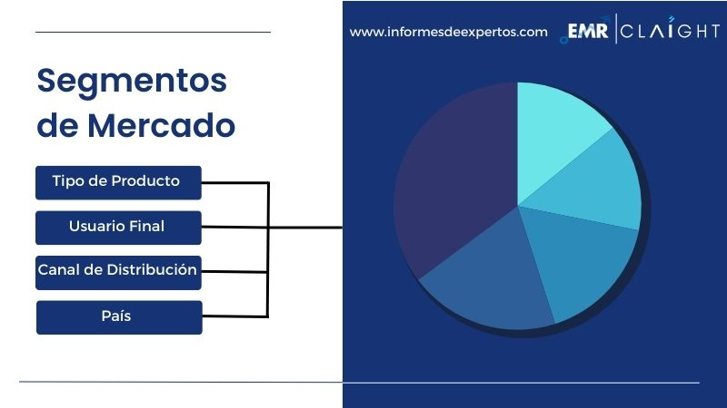

Comportamiento saludable de los consumidores que genera una gran demanda Las transcciones en el patrón de demanda de los consumidores se observan en América Latina, específicamente después de la pandemia que los ha llevado a cambiar su estilo de vida hacia la orientación de la salud. Además, el aumento de la participación femenina en actividades deportivas y entrenamientos de fitness ha proporcionado un impulso al mercado por la requisa masiva de ropa deportiva durante el gimnasio. Por lo tanto, se espera que este factor mejore el panorama de la industria deportiva en América Latina durante el período de previsión de 2025-2034.
Creciente adopción de prendas inteligentes debido a las tendencias emergentes de la moda El mercado de ropa deportiva en América Latina está floreciendo a través de la demanda personalizada para los consumidores de ropa inteligente mejor y mayor, como pantalones cortos de montar integrados por artificial inteligencia (IA) , relojes inteligentes de monitoreo de rendimiento, etc. Estas prendas diseñadas específicamente se lanzan en el mercado a precios de lujo por las diversas verticales de moda que está aumentando el margen de beneficio bruto de los jugadores clave del mercado de ropa deportiva en América Latina.
